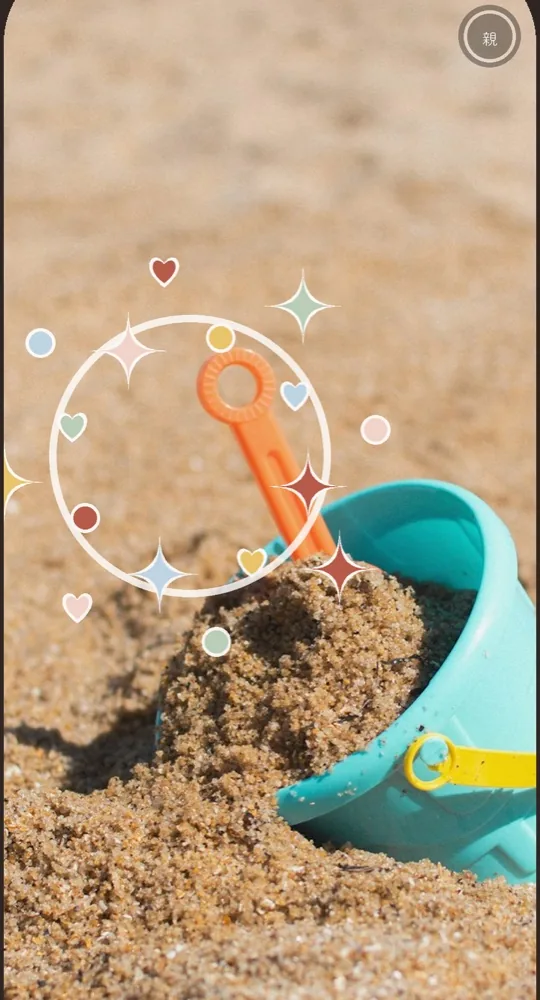
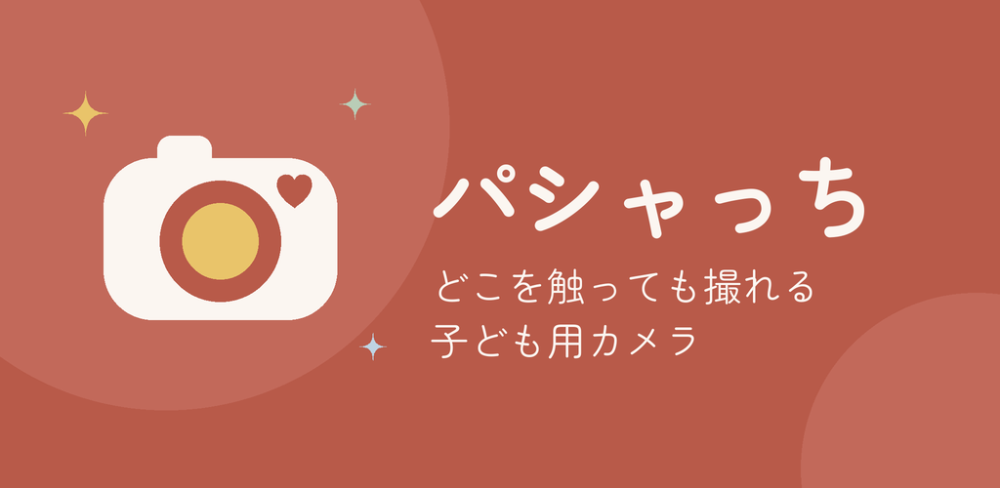
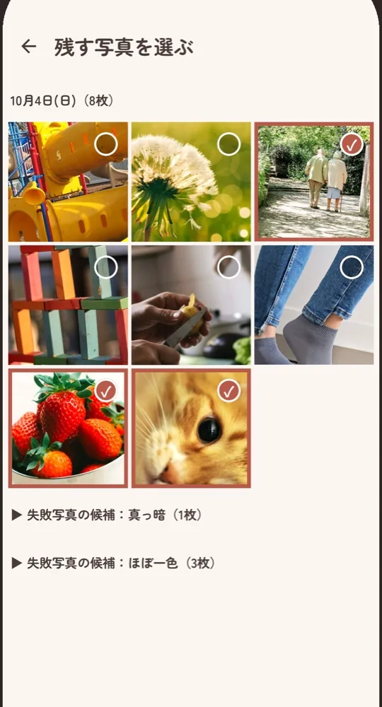
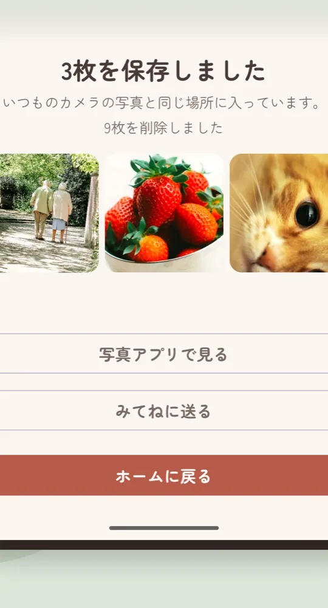
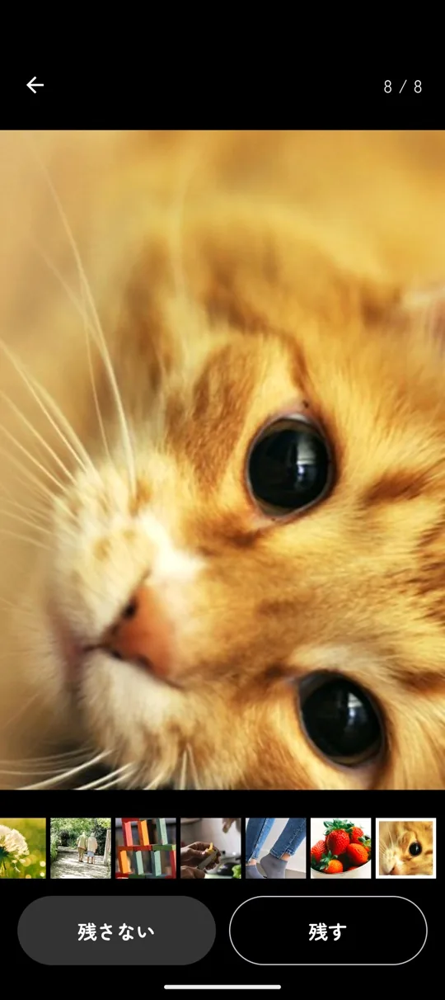

どこを触っても、
パシャッ。
撮るのは子ども、
スマホを
無料・Android 10 以上。

子どもにスマホを渡すと、
あとが大変。
あとが大変。
2歳半の娘に
-
いままで
写真アプリが、真っ暗な写真やブレた写真でいっぱいになる。
パシャっち撮った写真はいったんアプリが預かり、親が選んだ写真だけを写真アプリに残します。
-
いままで
気づくと、勝手にほかのアプリを開いたり、設定を変えたりしている。
パシャっち撮影中は画面がカメラに固定されます。戻れるのは、かけ算の答えを知っている親だけ。
-
いままで
シャッターボタンを探せなくて、うまく撮れずに飽きてしまう。
パシャっち画面のどこに触れても撮れます。撮るたびに星やハートが弾けます。
渡す、選ぶ、残す。

-
1
子どもに渡す
「カメラをはじめる」を押して渡します。あとは子どもが好きなだけ撮ります。
-
2
親が選ぶ
手が空いたときに、残す写真に印を付けます。

-
3
写真アプリに残す
選んだ写真だけがいつもの写真アプリに入り、残りは削除されます。

ほかにも、できること。
-
撮っている
子どもの顔も 残せる 外側と内側のカメラで同時に撮り、1枚に重ねます。子どもが見ていた景色と、そのときの顔がいっしょに残ります。対応機種のみ。

-
1枚ずつ
大きく見て選べる 「残す」「残さない」をタップすると次の写真へ進みます。ピンチで拡大すれば、ブレも確かめられます。

-
失敗写真は
自動で分けておく 真っ暗な写真やほぼ一色の写真は、一覧の最後にまとめます。勝手に消すことはありません。
-
みてねに
まとめて送れる 保存した写真を、家族アルバム「みてね」にそのまま渡せます。
-
選び忘れを
通知する 選んでいない写真が残っていると、最後に撮った1日後と7日後に通知します。それ以上は鳴らしません。
家族の写真は、
外に出ません。
-
通信しません
インターネットにつなぐ機能がありません。写真も操作の記録も、スマホの外に出ません。
-
広告がありません
子どもが触る画面に、広告や外へのリンクはありません。
-
位置情報を付けません
写真に撮った場所を記録しません。みてねや SNS に送っても、自宅や公園の場所は伝わりません。
-
使う許可は、
カメラと通知だけ 写真フォルダ、連絡先、マイクの許可は求めません。
買う前に、いつものスマホで試せます。
| 比べる項目 | おもちゃの |
スマホと |
|---|---|---|
| 値段 | 本体 4,000〜 |
基本無料。 |
| 用意するもの | 本体と SD カード | いつものスマホだけ |
| お出かけの荷物 | 1つ増える | 増えない |
| 写真の残し方 | SD カードから取り込む | 選んだ写真が写真アプリに。みてねにもまとめて送れる |
| 画質 | 機種による | スマホのカメラそのまま |
| 使わなくなったら | 本体が残る | アプリを消すだけ |
| 「自分のカメラ」感 | ある | ない |
どちらが向くかは、家庭によって違います。買うか迷っているなら、キッズカメラを買う前に。おもちゃのカメラとスマホ、どちらが向いているかを先に読んでください。
基本は無料。
無料
0円
- 撮る・選ぶ・削除は
何枚でも - 写真アプリへの保存は
月20枚まで - 20枚を超えた分は
保存せずにお知らせ
保存の上限をなくす
480円（税込）
買い切り。
- 写真アプリへの保存が
何枚でも - そのほかは
無料と同じ - 同じ Google アカウントなら
機種を変えても 引き継げます
よくある質問
どんなスマホで使えますか？
Android 10 以上のスマホとタブレットで使えます。iPhone と iPad ではまだ使えません。iPhone 版を準備しています。前後同時の撮影は対応機種だけで、はじめの案内で確かめられます。
使わなくなった古いスマホでも使えますか？
使えます。Android 10 以上なら、SIM も Wi-Fi も要りません。このアプリは通信をしないので、インストールと購入のときだけネットにつなげば、あとは圏外でも使えます。壊れたり失くしたりが心配なら、古いスマホに入れて渡すのがおすすめです。手順は使わなくなったスマホを、子ども用カメラにする手順にまとめました。
何歳から使えますか？
決まった年齢はありません。画面のどこに触れても撮れるので、シャッターボタンを探せない年齢の子でも撮れます。
子どもが勝手にホームに戻れませんか？
右上の小さなボタンを3秒押し、画面に出たかけ算の答えを入力しないと戻れません。3回間違えると、しばらく入力できなくなります。端末のボタンで固定を外されるのが心配なら、Android の設定で「アプリ固定」を検索し、固定を外すときにロック解除を求める設定をオンにしてください。手順は子どもにスマホを渡しても、カメラ以外を触れなくする設定にまとめました。
撮った写真はどこに保存されますか？
選ぶ前はアプリの中だけです。「残す」にした写真はいつもの写真アプリに保存され、Google フォトなどのバックアップにも載ります。残りはまとめて削除します。
アプリを消したり、機種を変えたりしたらどうなりますか？
選ぶ前の写真はアプリと一緒に消え、機種変更でも引き継がれません。先に選んで保存してください。保存した写真は、ほかの写真と同じように引き継げます。
スマホの容量は大丈夫ですか？
撮れる枚数に上限はありません。空き容量が少なくなると撮影を止めて、選ぶ画面に案内します。
シャッター音は消せますか？
設定で消せます。
みてねを使っていなくても使えますか？
使えます。みてねが入っていないスマホでは、「みてねに送る」ボタンが出ないだけです。